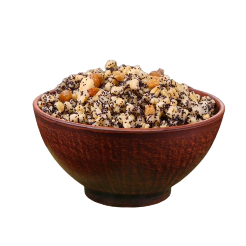
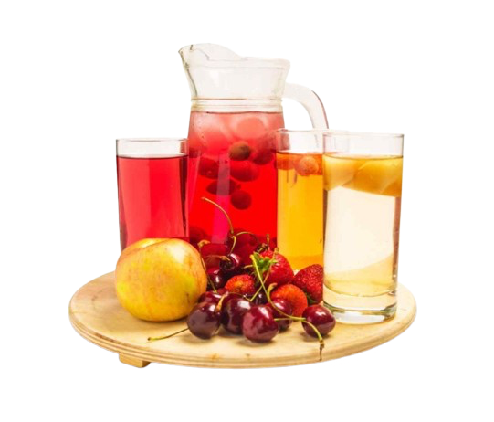

Кутя
Кутя – головна обрядова страва, з якої починається трапеза. Її готують із вареної пшениці (або іншого зерна), змішаної з медом, маком, горіхами та родзинками. Вона символізує родючість, достаток та духовну єдність родини. Кутя також є ритуальною їжею, яку подають на поминальних обідах, тому під час Святвечора вона символізує зв'язок з предками.
Борщ
Борщ у Святвечір – це пісний варіант традиційної української страви. Його готують на грибному бульйоні, замість м’яса використовують гриби, квасолю або овочі, а також додають квашені буряки. Борщ символізує достаток і щедрість землі, а його яскравий колір нагадує про силу життя.
Вареники з картоплею або капустою
Вареники з пісними начинками, такими як картопля або квашена капуста, є важливою частиною святкового столу. Їх готують пісними, без масла чи вершків, відповідно до вимог посту. Вареники символізують єдність і сімейне благополуччя.
Риба
Риба на Святвечір подається в різних варіаціях: смажена, запечена або тушкована. Оскільки м'ясо в цей день не можна їсти, риба стає основною білковою стравою. Вона символізує духовну чистоту і присутність Христа, адже риба є одним з ранніх символів християнства.
Голубці з рисом і грибами
Голубці на Святвечір традиційно роблять пісними – замість м’яса використовують рис, гриби, моркву. Ця страва символізує турботу і щедрість, а також захист родини (як голубка, що обгортає своє гніздо).
Гриби
Гриби можуть бути в різних варіантах: мариновані, смажені або тушковані. Їх використовують як начинку для пирогів або просто подають окремо. Гриби символізують достаток у лісі, гармонію між природою і людиною.
Квасоля або горох
Пісні страви з квасолі чи гороху є традиційними для Святвечора. Це можуть бути запечені боби або тушковані страви. Вони символізують відродження і новий початок, адже боби проростають і несуть нове життя.
Вареники з вишнями або іншими ягодами
Вареники з солодкою начинкою, як-от вишня або інші ягоди, доповнюють святковий стіл. Вони уособлюють солодкість життя і радість від настання Різдва.
Капусняк
Це суп з квашеної капусти, який варять на овочевому або грибному бульйоні. Капусняк символізує силу і витривалість, а квашена капуста вважається джерелом здоров’я та енергії в зимовий час.

Узвар
Узвар – це традиційний компот із сухофруктів, який подають як основний напій на Різдвяному столі. Його готують із сушених яблук, груш, слив і родзинок, додаючи трохи меду. Узвар символізує життя, родючість та силу природи, адже фрукти зберігають енергію сонця.
Пампушки або коржі
Пампушки – це невеликі булочки з дріжджового тіста, які часто подають до борщу або куті. Іноді до них додають часник або мак. Вони символізують ситість і достаток в домі, а також гостинність.

Пісні пиріжки
Пиріжки з пісними начинками, як-от гриби, капуста, або ягоди, також є важливою частиною трапези. Ці маленькі випічки символізують щедрість та гостинність, а їх кругла форма нагадує про вічний цикл життя.